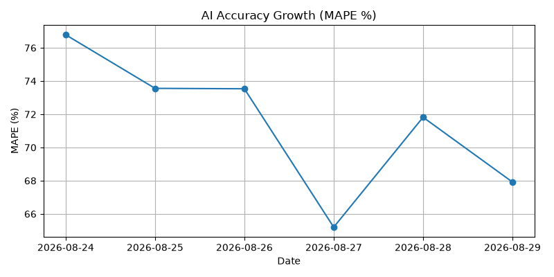

Self-Learning Osaka Weather AI
今日の 24時間 予報
大阪 天気予報
| Time | Temperature | Precipitation Probability | Weather |
|---|
| 2026-08-29T13:00 | 47.7°C | 0% | Overcast |
| 2026-08-29T14:00 | 48.7°C | 0% | Overcast |
| 2026-08-29T15:00 | 48.6°C | 0% | Partly cloudy |
| 2026-08-29T16:00 | 48.4°C | 0% | Overcast |
| 2026-08-29T17:00 | 46.4°C | 0% | Overcast |
| 2026-08-29T18:00 | 46.3°C | 0% | Partly cloudy |
| 2026-08-29T19:00 | 45.4°C | 0% | Partly cloudy |
| 2026-08-29T20:00 | 43.9°C | 0% | Partly cloudy |
| 2026-08-29T21:00 | 43.2°C | 0% | Overcast |
| 2026-08-29T22:00 | 42.6°C | 0% | Overcast |
| 2026-08-29T23:00 | 42.4°C | 0% | Overcast |
| 2026-08-30T00:00 | 42.0°C | 0% | Overcast |
| 2026-08-30T01:00 | 43.0°C | 0% | Overcast |
| 2026-08-30T02:00 | 42.1°C | 0% | Overcast |
| 2026-08-30T03:00 | 41.7°C | 0% | Partly cloudy |
| 2026-08-30T04:00 | 43.4°C | 0% | Partly cloudy |
| 2026-08-30T05:00 | 41.7°C | 0% | Partly cloudy |
| 2026-08-30T06:00 | 43.6°C | 0% | Overcast |
| 2026-08-30T07:00 | 44.4°C | 0% | Partly cloudy |
| 2026-08-30T08:00 | 43.9°C | 0% | Overcast |
| 2026-08-30T09:00 | 45.6°C | 0% | Overcast |
| 2026-08-30T10:00 | 46.2°C | 0% | Overcast |
| 2026-08-30T11:00 | 48.2°C | 0% | Overcast |
| 2026-08-30T12:00 | 47.0°C | 0% | Partly cloudy |
直近の完了済み気象データ
| 時間 | 気温 | 降水 |
|---|
| 00:00 | 26.2 | 98% |
| 01:00 | 25.6 | 100% |
| 02:00 | 25.3 | 100% |
| 03:00 | 24.6 | 98% |
| 04:00 | 24.3 | 99% |
| 05:00 | 24.1 | 99% |
| 06:00 | 24.0 | 98% |
| 07:00 | 24.4 | 93% |
| 08:00 | 25.0 | 87% |
| 09:00 | 26.1 | 82% |
| 10:00 | 27.1 | 83% |
| 11:00 | 28.5 | 86% |
| 12:00 | 29.4 | 84% |
| 13:00 | 30.3 | 68% |
| 14:00 | 30.3 | 47% |
| 15:00 | 29.7 | 35% |
| 16:00 | 29.5 | 43% |
| 17:00 | 29.4 | 61% |
| 18:00 | 29.3 | 69% |
| 19:00 | 28.6 | 55% |
| 20:00 | 27.9 | 33% |
| 21:00 | 27.6 | 20% |
| 22:00 | 26.8 | 28% |
| 23:00 | 26.5 | 46% |
| 00:00 | 26.4 | 61% |
| 01:00 | 26.3 | 67% |
| 02:00 | 26.1 | 71% |
| 03:00 | 25.7 | 75% |
| 04:00 | 25.5 | 84% |
| 05:00 | 25.7 | 94% |
| 06:00 | 26.5 | 100% |
| 07:00 | 26.4 | 100% |
| 08:00 | 26.7 | 95% |
| 09:00 | 26.7 | 90% |
| 10:00 | 26.8 | 84% |
| 11:00 | 27.4 | 76% |
| 12:00 | 28.1 | 69% |
誤差（完了観測 vs 事前予測）
MAE: 18.419 / MAPE: 67.92%
| 温度誤差 (°C) |
|---|
| 19.60 |
| 19.90 |
| 17.80 |
| 16.90 |
| 17.60 |
| 17.40 |
| 17.60 |
| 16.90 |
| 17.80 |
| 17.80 |
| 17.10 |
| 16.80 |
| 16.90 |
| 18.00 |
| 17.00 |
| 18.60 |
| 19.00 |
| 20.40 |
| 21.40 |
| 21.20 |
| 21.10 |
AI 成長グラフ（MAPE履歴）
